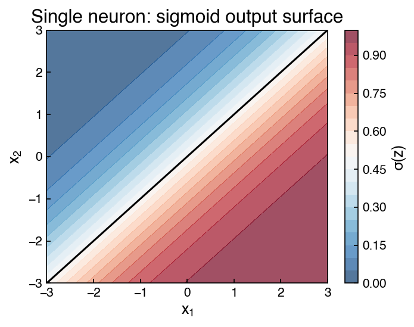
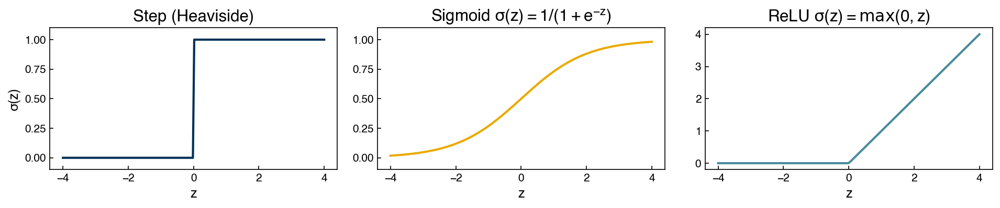
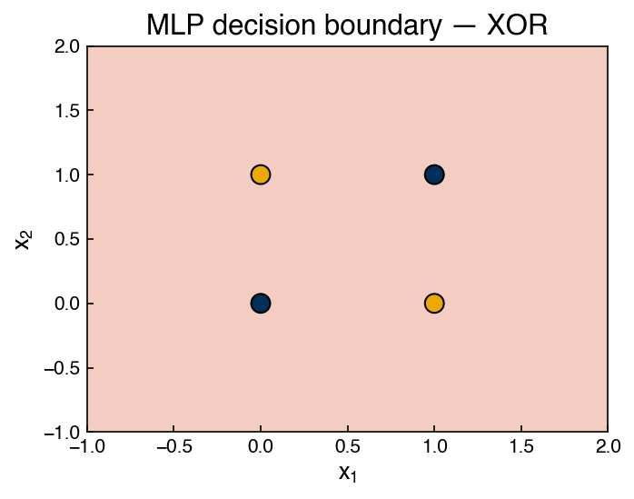
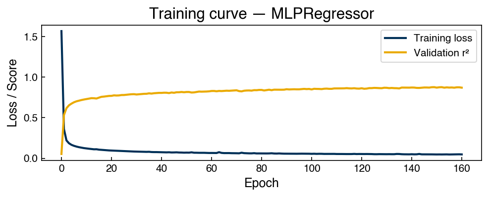

Neural Network Basics#
Learning Objectives
By the end of this chapter, you will be able to:
Explain why linear and kernel methods fall short for some problems and motivate the need for neural networks.
Describe the computation performed by a single neuron (weighted sum + activation) and implement it from scratch.
Compare step, sigmoid, and ReLU activation functions and explain why nonlinearity is essential for learning complex functions.
Describe the architecture of a multi-layer perceptron (MLP) and explain the universal approximation theorem conceptually.
Derive the chain rule for a two-layer network and explain how backpropagation distributes credit across layers.
Fit
sklearn.neural_network.MLPRegressorto a regression task, visualize the training loss curve, and tune hidden-layer size to control overfitting.
%matplotlib inline
import numpy as np
import pandas as pd
import matplotlib.pyplot as plt
from sklearn.preprocessing import StandardScaler
from sklearn.model_selection import train_test_split
plt.style.use('../settings/plot_style.mplstyle')
clrs = np.array(['#003057', '#EAAA00', '#4B8B9B', '#B3A369', '#377117',
'#1879DB', '#8E8B76', '#F5D580', '#002233'])
Motivation: Where Simpler Methods Fall Short#
The methods we have studied so far follow a common pattern: transform the raw features into a new space, then apply a linear model. Kernel methods (KRR, SVM) achieve nonlinearity by computing pairwise similarities; polynomial and symbolic regression achieve it by constructing explicit products and powers of input features.
Both approaches have fundamental limitations:
Kernel methods scale quadratically or cubically in the number of training points. A 50,000-point dataset requires a 50,000 × 50,000 kernel matrix — impractical.
Polynomial/symbolic regression requires explicit feature construction that grows combinatorially with input dimension and polynomial degree.
Neither approach learns a hierarchical representation: a face recognition model should learn edges first, then corners, then parts, then faces — not a flat transformation of raw pixel values.
Neural networks address all three limitations. They learn layered feature representations directly from data, with computational cost that scales linearly in the number of training samples at inference time.
The classic motivating example is the XOR function: two inputs \(x_1, x_2 \in \{0,1\}\), output 1 if exactly one input is 1, else 0. No linear model can separate the two classes because they are not linearly separable in the original 2-D space — but a two-layer network can.
Exercise 121
Verify that no linear model can solve XOR.
Fit
LinearRegressiontoX_xorandy_xorand round the predictions to 0 or 1. Report the accuracy.Fit
SVC(kernel='linear')andSVC(kernel='rbf'). Report accuracy for both.Explain in one sentence why the RBF kernel SVC can solve XOR while a linear model cannot.
# XOR: linear model fails, MLP succeeds
from sklearn.svm import SVC
from sklearn.neural_network import MLPClassifier
X_xor = np.array([[0,0],[0,1],[1,0],[1,1]])
y_xor = np.array([0, 1, 1, 0])
linear_svm = SVC(kernel='linear').fit(X_xor, y_xor)
mlp = MLPClassifier(hidden_layer_sizes=(4,), activation='relu', max_iter=5000,
random_state=0).fit(X_xor, y_xor)
print(f'Linear SVM accuracy: {linear_svm.score(X_xor, y_xor):.2f}')
print(f'MLP accuracy: {mlp.score(X_xor, y_xor):.2f}')
Linear SVM accuracy: 0.50
MLP accuracy: 1.00
The Perceptron: A Single Neuron#
Computation#
The fundamental unit of a neural network is the neuron (or perceptron). It:
Takes a vector of inputs \(\mathbf{x} = [x_1, \ldots, x_n]\).
Computes a weighted sum: \(z = \mathbf{w}^\top \mathbf{x} + b\).
Passes it through a nonlinear activation function: \(a = \sigma(z)\).
def neuron(x, w, b, activation):
z = np.dot(w, x) + b
return activation(z)
# Step function (original perceptron)
step = lambda z: (z >= 0).astype(float)
# Sigmoid
sigmoid = lambda z: 1 / (1 + np.exp(-z))
# ReLU
relu = lambda z: np.maximum(0, z)
# Example: 2-input neuron with w = [1, -1], b = 0
w = np.array([1.0, -1.0])
b = 0.0
x_test = np.array([2.0, 1.0])
for name, fn in [('step', step), ('sigmoid', sigmoid), ('relu', relu)]:
print(f'{name:8s}: z = {np.dot(w, x_test)+b:.2f}, a = {neuron(x_test, w, b, fn):.4f}')
step : z = 1.00, a = 1.0000
sigmoid : z = 1.00, a = 0.7311
relu : z = 1.00, a = 1.0000
With a step activation, the neuron is a binary classifier: it fires (\(a=1\)) if the weighted sum is positive. With sigmoid or ReLU, the output is a smooth function that can represent graded responses.
Visualizing the Linear Decision Boundary#
A single neuron with a step or sigmoid activation places a linear decision boundary in the input space — exactly the same as logistic regression:
xx, yy = np.meshgrid(np.linspace(-3, 3, 200), np.linspace(-3, 3, 200))
Z = np.dot(np.column_stack([xx.ravel(), yy.ravel()]),
np.array([1.0, -1.0])) + 0.0 # z = x1 - x2
Z_sig = sigmoid(Z).reshape(xx.shape)
fig, ax = plt.subplots(figsize=(5, 4))
c = ax.contourf(xx, yy, Z_sig, levels=20, cmap='RdBu_r', alpha=0.7)
ax.contour(xx, yy, Z_sig, levels=[0.5], colors='k', linewidths=1.5)
fig.colorbar(c, ax=ax, label='σ(z)')
ax.set_title('Single neuron: sigmoid output surface')
ax.set_xlabel('$x_1$')
ax.set_ylabel('$x_2$')
plt.tight_layout()

The straight black line is the decision boundary \(z = 0\) (i.e., \(x_1 - x_2 = 0\)). A single neuron can only separate data with a straight line — it cannot solve XOR.
Exercise 122
Implement and test a single neuron from scratch.
Using the
neuronfunction defined above, create a neuron with weightsw = [2.0, -1.5]and biasb = 0.5. Evaluate it on all four XOR inputs using the sigmoid activation. Report the four outputs.Find weights and bias by hand (not by training) such that the neuron correctly classifies the AND function: output 1 only when both inputs are 1. Verify your solution by evaluating on all four inputs.
Is it possible to solve XOR with a single neuron and any choice of weights? Explain why or why not.
Activation Functions#
Why Nonlinearity Is Essential#
If every neuron used a linear activation, stacking layers would still produce a linear function: \(W_2 (W_1 \mathbf{x} + \mathbf{b}_1) + \mathbf{b}_2 = (W_2 W_1)\mathbf{x} + \mathbf{b}'\) is just another linear transformation. Nonlinear activations are what allow multiple layers to represent exponentially more complex functions.
z = np.linspace(-4, 4, 200)
fig, axes = plt.subplots(1, 3, figsize=(13, 3))
# Step
axes[0].plot(z, step(z), color=clrs[0])
axes[0].set_title('Step (Heaviside)')
axes[0].set_ylim(-0.1, 1.1)
axes[0].set_xlabel('z')
axes[0].set_ylabel('σ(z)')
# Sigmoid
axes[1].plot(z, sigmoid(z), color=clrs[1])
axes[1].set_title('Sigmoid $σ(z) = 1/(1+e^{-z})$')
axes[1].set_ylim(-0.1, 1.1)
axes[1].set_xlabel('z')
# ReLU
axes[2].plot(z, relu(z), color=clrs[2])
axes[2].set_title('ReLU $σ(z) = \\max(0, z)$')
axes[2].set_xlabel('z')
plt.tight_layout()

Activation |
Range |
Advantages |
Disadvantages |
|---|---|---|---|
Step |
\(\{0,1\}\) |
Interpretable; original perceptron |
Non-differentiable; no gradient |
Sigmoid |
\((0,1)\) |
Smooth; natural probability output |
Vanishing gradients for large $ |
Tanh |
\((-1,1)\) |
Zero-centered |
Vanishing gradients |
ReLU |
\([0,\infty)\) |
Fast; no vanishing gradient for \(z>0\) |
“Dying ReLU” for \(z < 0\) |
Leaky ReLU |
\((-\infty,\infty)\) |
Fixes dying ReLU |
One extra hyperparameter |
In practice, ReLU is the default for hidden layers in most modern networks. Sigmoid and softmax are used in output layers for binary and multi-class classification respectively.
Exercise 123
Compare the gradient properties of activation functions.
Plot the sigmoid, tanh, and ReLU functions over \(z \in [-4, 4]\) on the same axes.
Plot their derivatives (analytical or numerical) on a second set of axes.
For the sigmoid function, identify the range of \(z\) where the gradient falls below 0.01. What fraction of the \([-4, 4]\) range does this represent?
Based on your plot, explain why ReLU is preferred over sigmoid for deep networks from a gradient flow perspective.
Multi-Layer Perceptrons#
Stacking Layers#
A multi-layer perceptron (MLP) (also called a fully-connected or dense network) stacks multiple layers of neurons. Each layer takes the activations of the previous layer as input:
(For regression, the output layer is typically linear; for classification, softmax.)
The Universal Approximation Theorem states that a single hidden layer with enough neurons can approximate any continuous function on a compact domain — but this says nothing about how many neurons are needed or how easily the model can be trained. In practice, depth (more layers) is often more efficient than width (more neurons per layer): each added layer can represent exponentially more functions for the same number of parameters.
Visualization: What Two-Layer XOR Looks Like#
# Fit a two-layer MLP to XOR and visualize the decision surface
from sklearn.neural_network import MLPClassifier
from sklearn.inspection import DecisionBoundaryDisplay
mlp_xor = MLPClassifier(hidden_layer_sizes=(4, 2), activation='relu',
max_iter=5000, random_state=42)
mlp_xor.fit(X_xor, y_xor)
fig, ax = plt.subplots(figsize=(5, 4))
DecisionBoundaryDisplay.from_estimator(mlp_xor, X_xor, response_method='predict',
cmap='RdBu', alpha=0.4, ax=ax)
ax.scatter(X_xor[:, 0], X_xor[:, 1], c=[clrs[yi] for yi in y_xor],
edgecolors='k', s=100, zorder=5)
ax.set_title('MLP decision boundary — XOR')
ax.set_xlabel('$x_1$')
ax.set_ylabel('$x_2$')
plt.tight_layout()

The MLP finds a non-linear boundary that correctly separates the XOR pattern — something no single neuron or linear model can achieve.
Exercise 124
Explore the effect of hidden layer width on XOR and a regression task.
Fit
MLPClassifierwithhidden_layer_sizes=(n,)for \(n \in \{1, 2, 4, 8\}\) on the XOR data. For each, report accuracy and whether the model solves XOR perfectly. What is the minimum width needed?Generate a 1-D regression dataset:
x = np.linspace(0, 2*np.pi, 100),y = np.sin(x) + 0.1 * np.random.randn(100). FitMLPRegressorwith one hidden layer and widths(4, 8, 16, 32, 64). Plot train and test \(r^2\) vs. width (use an 80/20 split). At what width does the model adequately fit the sine curve?
Training: Loss and Gradient Descent#
The Loss Surface#
Training a neural network means finding weights \(\{W^{(l)}, \mathbf{b}^{(l)}\}\) that minimize a loss function. For regression, the standard choice is mean squared error:
The loss is a function of all the weights — a surface in a very high-dimensional space. For a deep network with millions of parameters, visualizing this surface is impossible, but the key insight is that gradient descent can find a local minimum by repeatedly moving in the direction of steepest descent:
where \(\eta\) is the learning rate (step size). Too large and the optimizer overshoots; too small and convergence is slow. Mini-batch stochastic gradient descent (SGD) estimates the gradient from a random subset of data at each step, which is faster and often finds better solutions than full-batch gradient descent.
Exercise 125
Investigate the effect of learning rate on MLPRegressor training.
Using the sine regression data from the previous exercise (80/20 split,
hidden_layer_sizes=(32,),random_state=0), trainMLPRegressorwith learning rates[1e-4, 1e-3, 1e-2, 0.1]usingsolver='sgd'andmax_iter=200.Plot the training loss curve for each learning rate on the same axes.
Report the final train \(r^2\) for each. Which learning rate converges fastest without diverging?
Training: Backpropagation#
The Chain Rule on a Two-Layer Network#
The challenge of training deep networks is computing \(\nabla_\theta \mathcal{L}\) efficiently — the gradient of the loss with respect to weights in the first layer depends on how those weights affect the output through all subsequent layers. Backpropagation solves this with the chain rule of calculus.
Consider a minimal two-layer network with scalar inputs and outputs:
The gradient with respect to \(w_1\) (the first-layer weight) is:
In words: the output error is multiplied by the second-layer weight (how much the output depends on \(h\)), then by the activation derivative (how much \(h\) changes when \(z_1\) changes), then by the input \(x\) (how much \(z_1\) changes when \(w_1\) changes).
# Manual forward + backward pass for a one-hidden-neuron network
def forward(x, w1, b1, w2, b2):
z1 = w1 * x + b1
h = sigmoid(z1)
z2 = w2 * h + b2
yhat = z2
return yhat, h, z1
def backward(x, y, yhat, h, z1, w2):
dL_dyhat = 2 * (yhat - y) # ∂L/∂ŷ
dyhat_dh = w2 # ∂ŷ/∂h
dh_dz1 = sigmoid(z1) * (1 - sigmoid(z1)) # σ' = σ(1-σ)
dz1_dw1 = x # ∂z1/∂w1
dL_dw2 = dL_dyhat * h
dL_dw1 = dL_dyhat * dyhat_dh * dh_dz1 * dz1_dw1
return dL_dw1, dL_dw2
# Example: one data point
x, y_true = 2.0, 1.5
w1, b1, w2, b2 = 0.5, 0.0, -0.3, 0.0
yhat, h, z1 = forward(x, w1, b1, w2, b2)
dw1, dw2 = backward(x, y_true, yhat, h, z1, w2)
print(f'Forward: z1={z1:.4f}, h={h:.4f}, ŷ={yhat:.4f}')
print(f'Loss: {(yhat - y_true)**2:.4f}')
print(f'∂L/∂w1 = {dw1:.6f}')
print(f'∂L/∂w2 = {dw2:.6f}')
Forward: z1=1.0000, h=0.7311, ŷ=-0.2193
Loss: 2.9561
∂L/∂w1 = 0.405646
∂L/∂w2 = -2.513844
This manual calculation is exactly what PyTorch’s autograd engine performs
automatically for any computational graph, regardless of depth or architecture —
the key innovation that makes deep learning tractable.
Exercise 126
Verify the manual backpropagation calculation numerically.
Using the
forwardandbackwardfunctions above withx=2.0,y_true=1.5,w1=0.5,b1=0.0,w2=-0.3,b2=0.0, compute the analytical gradientsdL_dw1anddL_dw2.Compute the same gradients numerically using finite differences: \(\partial L / \partial w_1 \approx [L(w_1 + h) - L(w_1 - h)] / (2h)\) with \(h = 10^{-5}\).
Report the absolute difference between the analytical and numerical gradients. Are they in agreement to at least 6 decimal places?
Demonstration: MLPRegressor on the Dow Dataset#
Fitting and Training Loss#
from sklearn.neural_network import MLPRegressor
# Load and prepare Dow data
df = pd.read_excel('data/impurity_dataset-training.xlsx')
def is_real_and_finite(x):
try:
val = float(x)
return np.isfinite(val)
except (TypeError, ValueError):
return False
nondate = df.columns[1:]
numeric_map = df[nondate].apply(lambda col: col.map(is_real_and_finite))
real_rows = numeric_map.all(axis=1).values
X_dow = df[nondate].values[real_rows, :-5].astype(float)
y_dow = df[nondate].values[real_rows, -3].astype(float)
X_train, X_test, y_train, y_test = train_test_split(
X_dow, y_dow, test_size=0.2, random_state=0)
# Standardize
scaler = StandardScaler()
X_tr = scaler.fit_transform(X_train)
X_te = scaler.transform(X_test)
mlp_reg = MLPRegressor(
hidden_layer_sizes=(64,),
activation='relu',
solver='adam',
max_iter=500,
early_stopping=True,
validation_fraction=0.1,
random_state=0,
verbose=False,
)
mlp_reg.fit(X_tr, y_train)
print(f'Train r²: {mlp_reg.score(X_tr, y_train):.3f}')
print(f'Test r²: {mlp_reg.score(X_te, y_test):.3f}')
print(f'Stopped at iteration: {mlp_reg.n_iter_}')
Train r²: 0.914
Test r²: 0.902
Stopped at iteration: 161
fig, ax = plt.subplots(figsize=(7, 3))
ax.plot(mlp_reg.loss_curve_, label='Training loss')
ax.plot(mlp_reg.validation_scores_, label='Validation r²')
ax.set_xlabel('Epoch')
ax.set_ylabel('Loss / Score')
ax.set_title('Training curve — MLPRegressor')
ax.legend()
plt.tight_layout()

Hyperparameter Guide#
The table below summarizes the most important hyperparameters and how to tune them:
Hyperparameter |
What it controls |
Practical guidance |
|---|---|---|
Hidden layer sizes (depth × width) |
Model capacity |
Start with 1–2 layers, 32–128 units; increase only if underfitting |
Activation |
Nonlinearity type |
Use |
Learning rate |
Step size in SGD |
Adam with default lr (0.001) works well; decrease if loss oscillates |
Batch size |
Gradient noise level |
Larger batches → smoother gradients; smaller → more regularization |
Early stopping |
Overfitting control |
Always enable for small datasets; monitor validation loss |
L2 regularization ( |
Weight magnitude penalty |
Increase if test r² << train r² |
Exercise 128
Explore the effect of L2 regularization on the Dow MLPRegressor.
Using
X_tr,X_te,y_train,y_testfrom above, trainMLPRegressorwithhidden_layer_sizes=(128,),solver='adam',max_iter=500,random_state=0, and L2 penaltyalphaswept over[1e-5, 1e-4, 1e-3, 1e-2, 0.1, 1.0].For each
alpha, record train \(r^2\) and test \(r^2\).Plot train and test \(r^2\) vs.
log10(alpha). Identify thealphathat maximizes test \(r^2\) and note how the gap between train and test \(r^2\) changes.
Summary#
Neural networks learn layered feature representations: each layer transforms the previous layer’s activations, allowing the network to represent arbitrarily complex functions.
A single neuron computes \(a = \sigma(\mathbf{w}^\top \mathbf{x} + b)\). Without a nonlinear activation \(\sigma\), stacking layers is equivalent to a single linear model.
Common activations: step (non-differentiable, historical), sigmoid (smooth, vanishing gradient for large \(|z|\)), ReLU (fast, no vanishing gradient for \(z > 0\), default for hidden layers).
Backpropagation applies the chain rule to propagate the gradient from the output back through each layer, enabling efficient computation of \(\nabla_\theta \mathcal{L}\) for any depth.
sklearn.neural_network.MLPRegressorprovides a practical interface for regression with MLPs. Training loss curves and width/depth sweeps are essential diagnostics for understanding capacity and overfitting.
Additional Reading#
Goodfellow, I., Bengio, Y. & Courville, A. (2016), Deep Learning — the standard reference, free at deeplearningbook.org
Nielsen, M. A. (2015), Neural Networks and Deep Learning — free online book with excellent visual intuitions: neuralnetworksanddeeplearning.com
scikit-learn User Guide: MLPRegressor, Neural network models